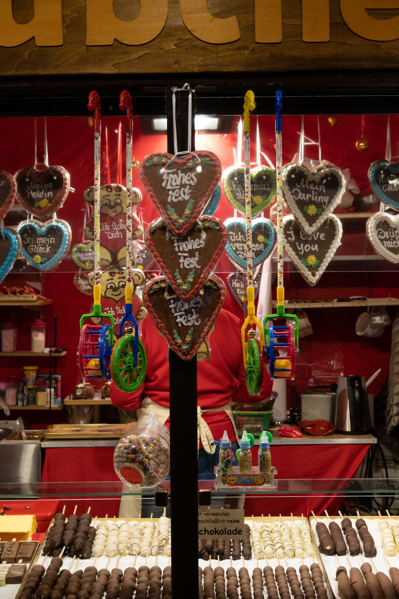

Sep – Oct
The Wiesn
Sixteen days of Oktoberfest: stall hearts by the hundred, tent orders by the crate, and a queue of people who want their sweetheart's name spelled exactly right.
Made-to-order closes 1 SeptemberI am Resi, and Munich is my city — the Wiesn is my new year and the Christkindlmarkt is my second kitchen. I bake Lebkuchen hearts thick, rest the dough six weeks, and pipe your words on by hand, one heart at a time. A heart is a letter you can eat. I just make sure it is spelled right.
 Hearts from €6
Hearts from €6
Pick a size, say how many, type your words. The planner works from the same table that hangs in my workshop — if the numbers here and the numbers there ever disagree, the table wins and I owe you a heart.
| Heart | Wide | Dough | Per tray | Letters fit | Price |
|---|---|---|---|---|---|
| Handlich | 12 cm | 90 g | 6 | 10 | €6 |
| Klassik | 18 cm | 180 g | 4 | 16 | €9 |
| Großherz | 24 cm | 320 g | 2 | 24 | €14 |
| Riesenherz | 32 cm | 550 g | 1 | 34 | €22 |
| Schauherz | 45 cm | 950 g | 1 | 48 | €38 |
Lettering is timed at half a minute per character, plus the border-and-flowers base time per heart (3–9 minutes by size). Ribbon hanger, cellophane and a paper gift bag are in every price. Letters fit counts every character, spaces included — I pipe what you type.
The defaults are a real order size: a dozen Klassik hearts, the brewery crew's size from the Work page.
The order form, the exact text, the date you need them. Names are checked letter by letter — twice.
You get a paper sketch of your heart within two working days. Nothing is baked before you say yes.
Hearts are cut from six-week dough, baked soft in the middle, piped the day after so the icing sits clean.
Ribbon hanger threaded, wrapped, boxed flat. Collect in Sendling or posted anywhere in Germany.
Sixteen days of Oktoberfest: stall hearts by the hundred, tent orders by the crate, and a queue of people who want their sweetheart's name spelled exactly right.
Made-to-order closes 1 September
Four cold, bright weeks at the market: Frohes Fest hearts, company gifts, and last-minute names piped at the counter while you wait with a Glühwein.
Made-to-order closes 20 NovemberThree favourites — the full stories, with sizes and inscriptions, are on the Work page.
“Prost aufs Team” on Klassik hearts for every shift of a Munich brewery.

Every guest's name piped on a Handlich heart, hung at their seat.
A 45 cm Schauherz for a Sendling bakery's anniversary window.
“Resi piped all 64 names herself and not one was wrong — including my grandmother's, which has two umlauts and a hyphen. Guests wore their hearts home around their necks. Three are still hanging in kitchens, a year on.”
Send me the words and the date. I reply within two working days with a lettering sketch and an honest yes or no on timing — fair season fills fast, and I would rather say no in October than sorry in December.
Start an order